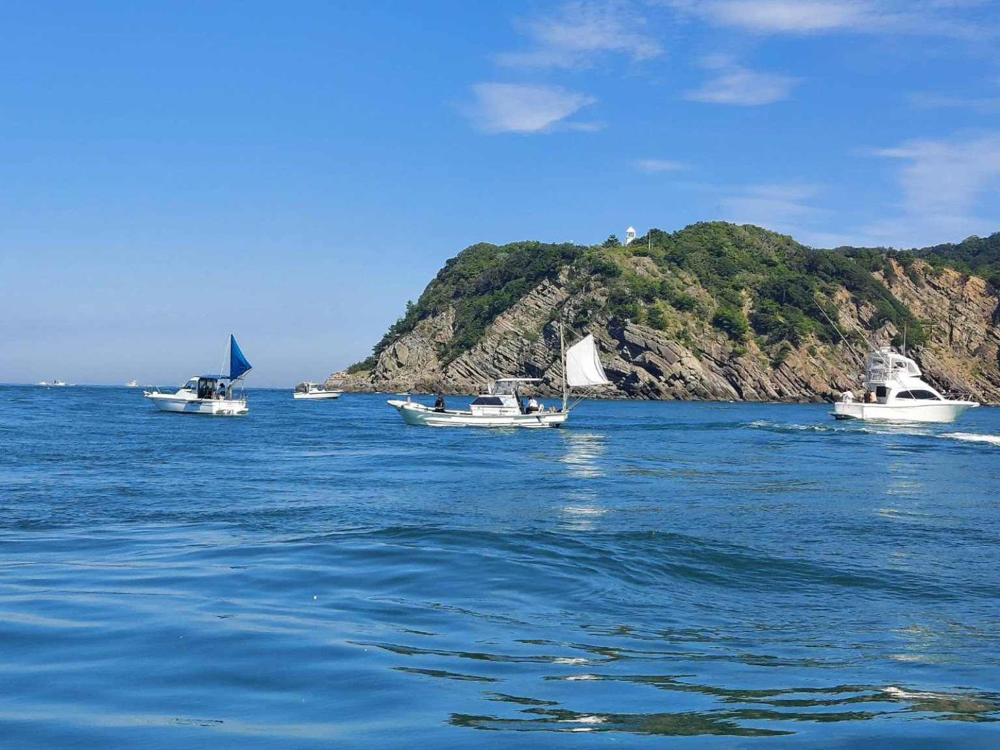
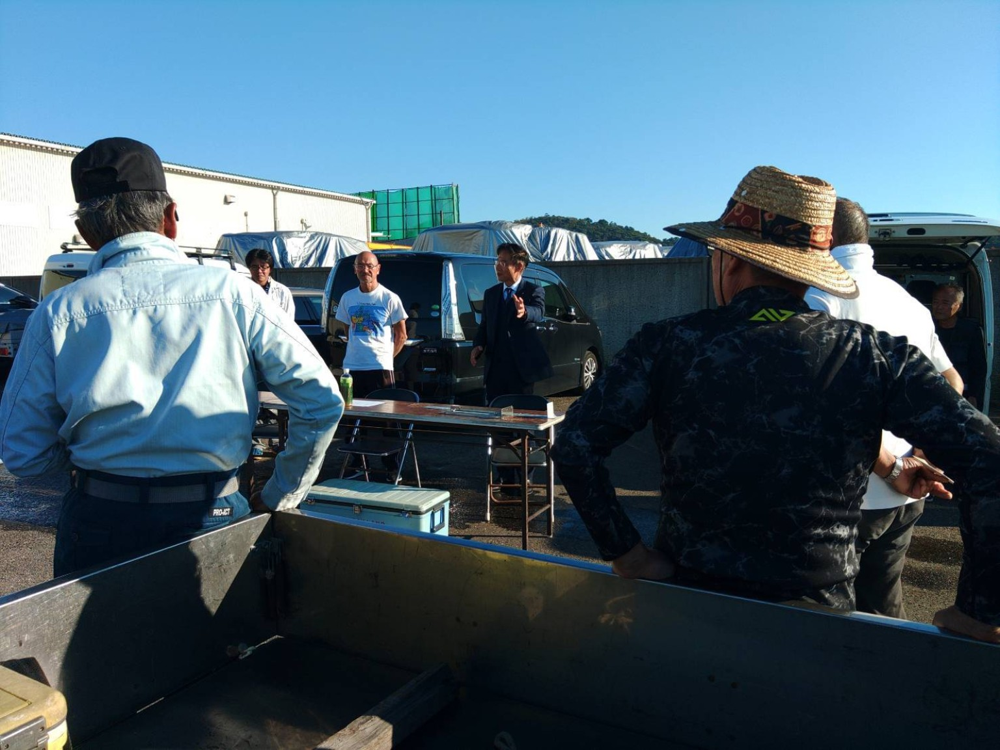
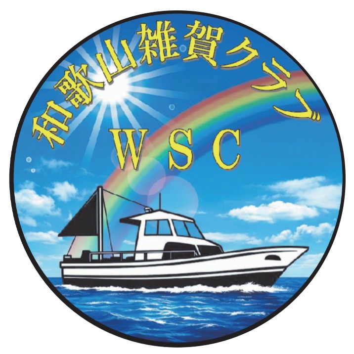

釣り情報を共有
グループLINE等を使い、会員同士で釣り情報を共有しています。

WAKAYAMA SAIKA CLUB / OUR STORY
海でつながり、情報を分かち合い、困った時には助け合う。和歌山雑賀クラブは、船釣りを通じて仲間とのつながりを大切にしています。
和歌山雑賀クラブ（わかやまさいかくらぶ）。
クラブ発足時、雑賀地区に船舶を係留していたことから「雑賀クラブ」と呼ばれるようになりました。海と船を起点に生まれた名前が、現在まで受け継がれています。

日々の情報共有から、海上での助け合い、年間行事、港の環境まで。会員同士で支え合いながら活動しています。
グループLINE等を使い、会員同士で釣り情報を共有しています。
出航中に船舶の故障などが起きた場合は、会員同士で助け合って救助しています。
年間行事を通じて情報交換を行い、会員同士の親睦を深めています。
港湾設備や係留施設の不具合等について関係機関へ意見具申するとともに、必要に応じて折衝も行います。
釣果だけを競うのではなく、安全に出航し、情報を分け合い、困った時は支え合う。年間行事も大切な交流の場です。


WAKAYAMA SAIKA CLUB / WSC CLUB STICKER